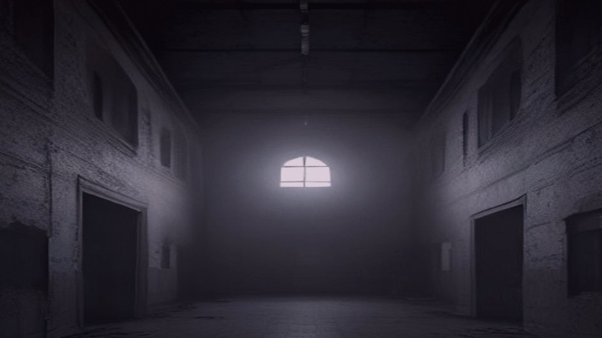

Occult Horror
Case Number 4211
Vaughn's fingers hesitate on the stenotype keys as a shiver runs down his spine, the patient's last words echoing in his mind like a whispered warning.
Read Full Story →